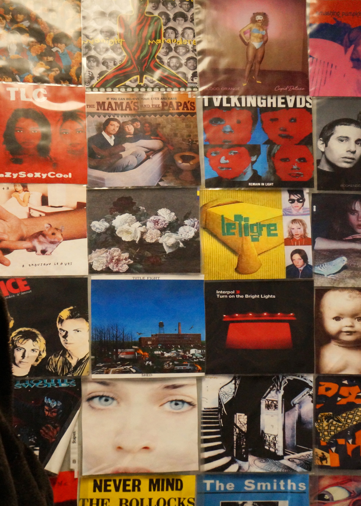

MEDPL 150 · Homework 2 · Image 2

I chose this photo because I am a music head, and this wall is basically a visual version of my personality. Artists like Fiona Apple, TLC, Talking Heads, Interpol, and A Tribe Called Quest are not just albums to me — they are memories, taste, and culture. As a DJ I actually live with this kind of imagery and sound all the time.
Composition wise, I like the grid because it creates structure, and then the colors and faces break that structure with variety and focal points. Your eyes bounce from cover to cover, but you still feel the unity because everything belongs to the same visual world. In Photoshop, I worked to make the colors and details feel intentional so the wall reads like a curated collage, not just a snapshot. For me, it represents music, dance, and pop culture as identity, not just entertainment.